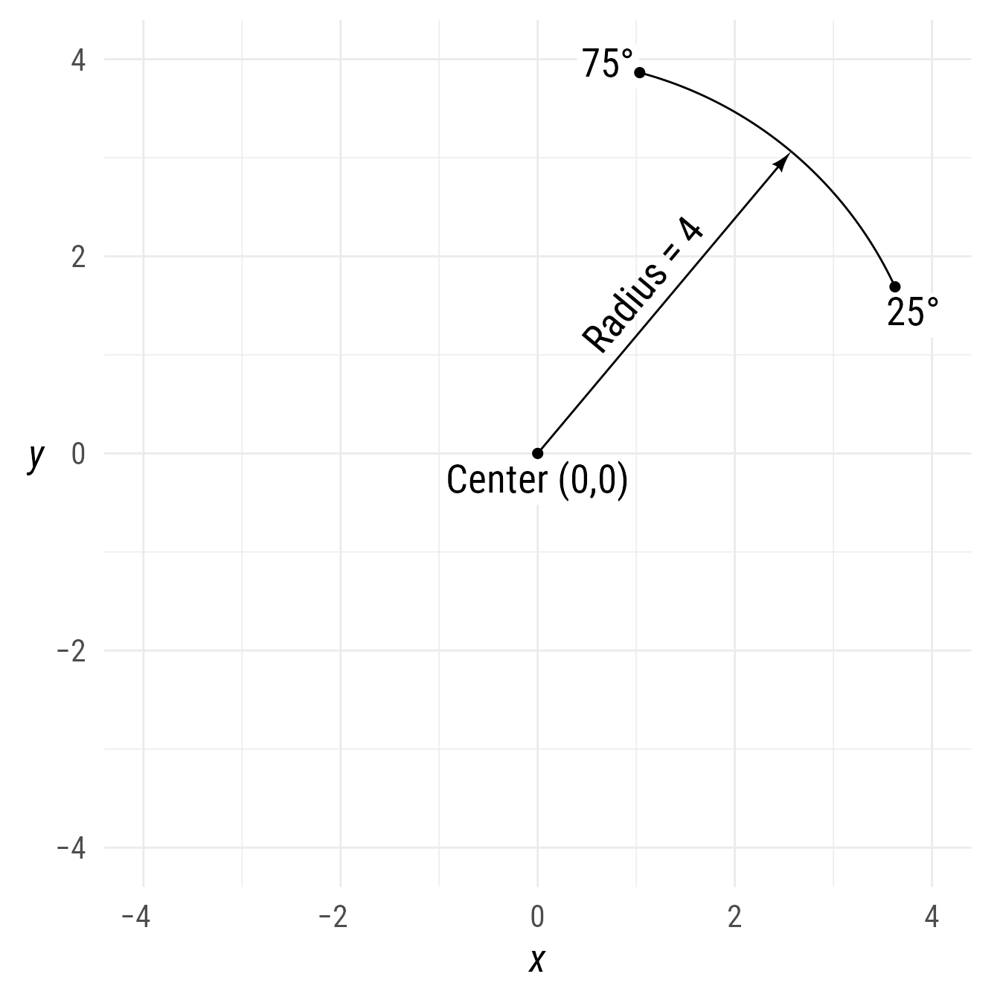

Setup
Packages
Base Plot
To avoid repetitive code, we make a base plot:
my_font <- "Roboto Condensed"
my_font_size <- 20
my_point_size <- 2
my_arrowhead <- arrowheadr::arrow_head_deltoid(2.3, n = 101)
# my_colors <- viridis::viridis(2, begin = .25, end = .5)
my_colors <- c("#3B528B", "#21908C")
theme_set(
theme_minimal(
base_size = my_font_size,
base_family = my_font) +
theme(axis.title.y = element_text(angle = 0, vjust = 0.5)))
bp <- ggdiagram(
font_family = my_font,
font_size = my_font_size,
point_size = my_point_size,
linewidth = .5,
theme_function = theme_minimal,
axis.title.x = element_text(face = "italic"),
axis.title.y = element_text(
face = "italic",
angle = 0,
hjust = .5,
vjust = .5)) +
scale_x_continuous(labels = signs_centered,
limits = c(-4, 4)) +
scale_y_continuous(labels = signs::signs,
limits = c(-4, 4))Arcs
Just as a segment is part of a line between two points on the line, an arc is part of a circle between two points (on the circle). Thus, an arc has all the properties a circle, with the addition of starting and ending points. For the sake of simplicity, these starting points are specified as angles.
Arc starting and ending points can be specified with any angle unit. If a number is used, it will be interpreted as a degree unit.
ob_arc(center = ob_point(1,2),
start = 25,
end = 75,
radius = 3)
#> <ob_arc>
#> @ center: <ob_point>
#> @ x: num 1
#> @ y: num 2
#> @ radius: num 3
#> @ start : <degree>
#> @ degree: num 25
#> @ end : <degree>
#> @ degree: num 75
#> @ theta : <degree>
#> @ degree: num 50
#> Other props: label, wedge, alpha, arrow_head, arrow_fins,
#> arrowhead_length, length_head, length_fins, color,
#> fill, lineend, linejoin, linewidth, linewidth_fins,
#> linewidth_head, linetype, n, resect, resect_fins,
#> resect_head, stroke_color, stroke_width, apothem,
#> sagitta, bounding_box, chord, length, polygon, style,
#> tibble, geom, angle_at, autolabel, midpoint, point_at,
#> tangent_at, aestheticsCode
bp +
{p1 <- ob_point(0, 0)} +
{a1 <- ob_arc(
center = p1,
radius = {r <- 4},
start = {ang_start <- degree(25)},
end = {ang_end <- degree(75)}
)} +
ob_label(
label = paste0("Center ", p1@auto_label),
p = p1,
vjust = 1.1) +
connect(
p1,
a1@midpoint(),
label = paste0("Radius = ", r)) +
ob_label(
label = ang_start,
p = a1@midpoint(0),
polar_just = ob_polar(ang_start + degree(-90), 1.3),
plot_point = TRUE) +
ob_label(
label = ang_end,
p = a1@midpoint(1),
polar_just = ob_polar(ang_end + degree(90), 1),
plot_point = TRUE)
Starting or ending points of arcs
Sometimes you do not know where the center of an arc should be. Instead, you want the arc to start or end at a specific point. For example, you might want to specify the start point or the end point.
Midpoints
The midpoint function can find one or more midpoints at different positions. The default position is .5.
bp +
a1 +
a1@midpoint()The starting and ending points are at position 0 and 1, respectively.
bp +
a1 +
a1@midpoint(position = c(0,1))Labelling arcs
By default, the arc label will appear outside the midpoint of the arc

If a label is needed elsewhere, it can be set with the label function’s position property.
bp +
ob_arc(radius = 3,
start = 20,
end = 120,
label = ob_label(c("Start", "Middle", "End"),
position = c(0,.5, 1),
plot_point = TRUE))If the orientation of the label needs to be changed, it can be set with vjust, hjust, or polar_just.
There are cases where the arc is already created and a label is needed. Although the label can be added after the arc has been created, the position would have to be set manually (otherwise the position will be at 0,0 by default). In such cases, the auto_label function can help place the label correctly. By default, the auto_label will show the the theta property (i.e., end − start).
bp +
{a1 <- ob_arc(radius = 3,
start = 20,
end = 120)} +
a1@autolabel()
However, any label can be inserted at any position.
bp +
a1 +
a1@autolabel(label = "Start", position = 0)Arcs with arrows
The arc object is plotted using ggarrow::arrow. This means that arrows can be placed on either end of an arc.
my_arrow_head <- arrowheadr::arrow_head_deltoid(d = 2.3, n = 100)
bp +
ob_arc(radius = 3,
start = 0,
end = 180,
arrow_head = my_arrow_head,
arrow_fins = my_arrow_head,
arrowhead_length = 8)Wedges
If the ob_arc@wedge property is set to TRUE, the ob_arc function will plot a wedge using ggplot2::geom_polygon. The ob_wedge function is a convenient wrapper function for ob_arc that sets the @wedge property to TRUE.